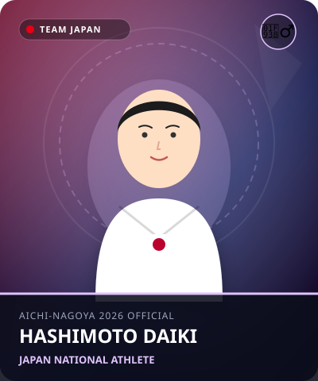

体操
•
体操 / 男子個人総合 / 鉄棒 / ゆか
はしもと だいき
橋本 大輝
Daiki Hashimoto
🏢 所属: セントラルスポーツ
🏅 東京五輪2冠（個人総合・鉄棒）🏅 パリ五輪団体金メダル🏅 世界体操個人総合2連覇
内村航平のDNAを継ぐ体操ニッポンの絶対エース。優美な空中技と完璧な着地で魅せる
経歴・これまでの歩み
兄2人の背中を追って6歳で体操を始める。市船橋高校から順天堂大学へ進学。東京2020大会で個人総合・鉄棒の金メダルを獲得し、19歳の最年少王者となった。2022年・2023年世界選手権で個人総合連覇。パリ五輪でも団体金メダルに大きく貢献した。
主要大会ハイライト戦績
2024年
パリオリンピック
男子団体 金メダル
2023年
アントワープ世界体操
個人総合 金メダル / 鉄棒 金メダル / 団体 金メダル
2022年
リバプール世界体操
個人総合 金メダル
2021年
東京オリンピック
個人総合 金メダル / 鉄棒 金メダル / 団体 銀メダル
プレイスタイル＆世界を制する武器
6種目すべてに弱点のないオールラウンダー。特に鉄棒での大技「リューキン」「カッシーナ」を連続で放つ離れ技の高さと、微動だにしない着地止め（スティック）は芸術の域。
愛知・名古屋2026への決意とメッセージ
大会スケジュール＆観戦のツボ
🗓️ 出場予定日程・会場
2026年9月22日 団体・個人総合予選 / 9月24日 個人総合決勝 / 9月26日 種目別決勝
👀 観戦の注目ポイント
6種目を高得点で揃える総合力と、最終種目の鉄棒で見せる高難度バー離し技からのピタリと止まる着地。